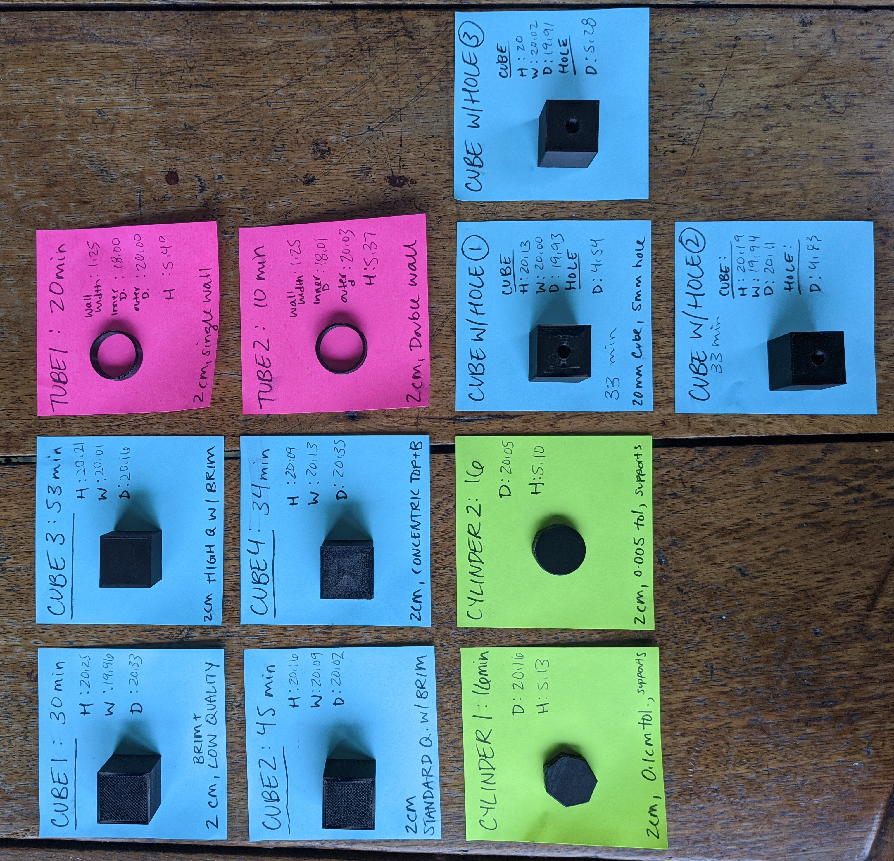

This week, I set up my 3d printer and got started with various basic shapes. This helped me calibrate my machine and get comfortable with slicer settings! Along the way I trouble shooted some issues around first layer adhesion. Here's what I made:

Read on to learn how I did it!
I set up my printer using the directions that came with the kit. I made sure to check that all the screws were tight- especailly the eccentric nuts on the extruder.

Next I leveled the bed (with a sheet of paper?! Really?!) and loaded the filament. My printer was ready to roll!

I built the required shapes easily in Rhino by using it's basic tool function. I exported them as .STLs, then imported them into Ultimaker Cura to slice them for printing. I used the settings to create a brim on my shapes, which helps with first layer adhesion.
I also tried printing the same shapes at different quality settings. "LOw Quality" printed more quickly, but lacked the polished finish that longer, "High Quality" prints had. Some other settings I experimented with were infill and wall thickness.
I exported the sliced shapes as gcode- which is basically instructions for your printer- and got started!
Printing went smoothly- with a few expections. Twice I faced adhesion issues- which I resolved by 1. Cleaning the Bed (note: don't touch the printbed with lotion on your hands) and 2. Leveling the Printbed after checking the extruder's auto-home location.
This assignment was pretty straighforward, although I did get to experiment a bit when I printed the "Cube with a Hole" shape. This one I printed 3 times to see how close to the +/- .5mm threshold I could make the shape. My first print was within the threshold, but barely:
"Cube with a Hole 2" was closer. I adjusted the slice settings to only have one extrusion wall thickness to give the hole some more space, and set it to print at a higher quality (dynamic).
For print 3, I used the same slicer settings as print 2- BUT I rebuilt the shape in Rhino with a larger hole. Instead of creating a hole with exactly a 5mm diameter, I made it 5.5mm (accounting for the difference I was seeing in prints).

This assignment was a great confidence builder! After finishing my basic shapes, I started playing on my own with the cookie cutters. More to come!